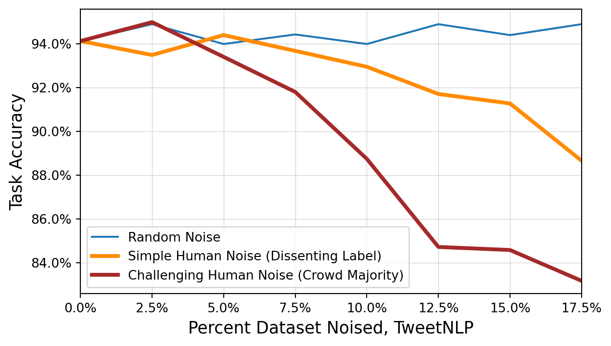
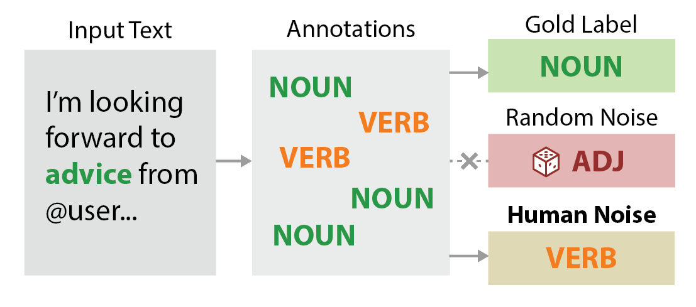
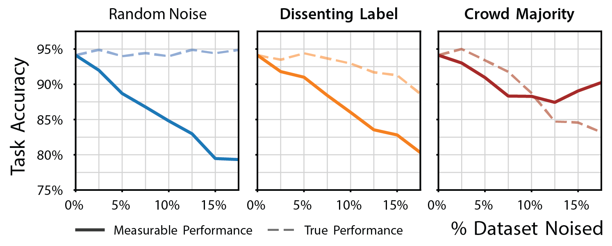
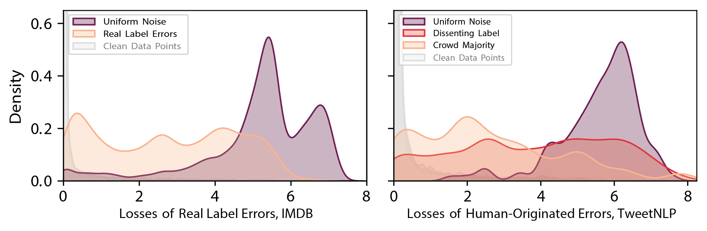

* Equal contribution.
A label error is a mistake in assigning a label to an item within a dataset. Label errors exist in virtually all datasets, and can be introduced by a variety of sources, including human annotators, automatic labeling systems, and data collection processes. They can be difficult to detect, and result in poor model performance.
Estimates of error prevalence vary between 1% and 20% (Redman 1998; Abedjan et al. 2016).
In our paper, “Detecting Label Errors by using Pre-Trained Language Models”, to be published at the 2022 Conference on Empirical Methods in Natural Language Processing (EMNLP 2022), we show that label errors can have much larger impacts on model performance than previously believed, due to effects on model robustness, selection, and evaluation that are difficult to study using existing data noising techniques. To help mitigate this issue, we then present a simple method for detecting label errors using foundation models (large pre-trained language models) that may improve performance in many natural language applications.
In this blog post, we provide a summary of key findings that may be useful to know when applying machine learning in NLP. We then discuss more general implications in the study of LNL (Learning with Noisy Labels).
| Dataset | Input Text | Labeled | Actually |
|---|---|---|---|
| IMDB | The ending made my heart jump up into my throat. I proceeded to leave the movie theater a little jittery. After all, it was nearly midnight. The movie was better than I expected. I don’t know why it didn’t last very long in the theaters or make as much money as anticipated. Definitely would recommend. | Negative | Positive |
| Amazon Reviews | I DO NOT RECOMEND THIS PRODUCT!! the two part pole is suposed to screw in & then there is NO WAY to conect the pole to the rooster!! the notches that are suposed to like up on the bottom of the rod to the rooster dont match up! the two parts of the pole that are suposed to hook together dont match up!!! | Neutral | Negative |
Label errors can be detected using pre-trained language model loss
It is empirically known that data points with high loss often have unusual characteristics. We demonstrate that the loss of a fine-tuned pre-trained language model is strongly associated with likelihood of an out-of-sample data point being a label error, across a range of pre-trained language models and NLP benchmark datasets.
“Out-of-sample” refers to data points which were not in the current training split. However, this does not prevent this technique from being used on training data, which can simply be divided into folds and cross-validated.

Simply evaluating a small percentage of items in descending order of loss identifies a large proportion of label errors with high precision, and more effectively than both non-pre-trained baselines, and a more complex state-of-the-art error detection framework.
Takeaway: Checking the high loss data points of a foundation model can be useful as a quick and easy data quality health check, or for more rigorous data cleansing.
Models are far less robust to label errors than previously believed
Deep learning is thought to be robust to massive amounts of label noise. Models have been shown to achieve high accuracy in datasets with as many as a hundred noisy items for each clean item (Rolnick et al. 2017), and research into learning with noisy labels focuses on label noise in the range of 20-80% (Song et al. 2022).
However, studies almost always use simple artificial noise, in which labels are randomly flipped with no regard to the input text. This is a very different scenario from real-world label errors, which are often caused by human error, and are often correlated with the input text.
We revisit the question of model robustness using a new form of realistic, human-originated label noise, which takes advantage of latent human error that exists within crowdsourced datasets.

In contrast to previous findings, we show that performance very quickly decreases as the amount of realistic label noise increases. Models learn to reproduce patterns of human error from training data with as little as 5-15% label noise.
We developed three noising protocols, which each simulate a different class of label error. The protocols are described in detail in our paper. For the most challenging class of noise, Crowd Majority, performance degradation was roughly linear with the amount of noise applied.
Takeaway: Significant performance improvements can be achieved by cleaning noisy training datasets.
Label errors in evaluation splits may harm performance more than in training splits
The majority of Learning with Noisy Labels research focuses on noise in training splits, and ignores noise in evaluation splits. The existence of a clean test split is usually assumed in order to fairly evaluate techniques for learning on noisy training data. However, recent work by Northcutt, Athalye, and Mueller (2021) calls attention to this gap, finding that the test splits of many popular ML benchmark datasets contain label errors, and that these errors destabilize benchmark performance.
We show that noise in test and validation splits has several harmful effects on model performance.
Test split errors may reduce and distort measurable performance
Test splits are used to evaluate models’ true performance. These results factor into decisions about whether a model may be deployed, for example due to regulatory compliance requirements, or the needs of downstream users. But because real-world datasets have noisy test splits, measurements may not accurately reflect the true performance of a model.
We show that label errors in test splits generally result in measuring lower performance than the model would achieve in the real world. However, more challenging and realistic label errors may also have the opposite effect. Because models are learning erroneous features from systematic errors in training data, this may enable “correct” predictions on test data that contains the same errors. At higher levels of noise, this may result in measuring higher performance than the model would achieve in the real world (such as in Crowd Majority below).

We also show that using pre-trained language models to highlight likely errors for re-evaluation and cleaning moves measurable performance towards the true performance of the model.
Takeaway: Given the prevalence of label errors in real-world datasets, typical error rates, and typical data cleaning effectiveness, we estimate that cleaning a small percentage of test split items can increase measurable performance by 1-2% in a large number of real-world NLP applications.
Validation split errors may cause poor model selection
Validation splits are used to select the best model from a set of candidate models, such as might be produced by a hyperparameter search process. Our experiments show that label errors in validation splits can damage final performance by selecting a model that performs best on noisy validation data, but not on real data.
Using a validation split which has been corrected by re-evaluating the high loss items generally selects a slightly better model, which results in a small improvement in final test performance, but does not fully correct the problem.
| Model Selected Using | True Test Accuracy | True Model Rank |
|---|---|---|
| Noisy Validation Set | 94.2 | 10 |
| Corrected Noisy Validation Set | 95.1 | 4 |
| Clean Validation Set | 95.8 | 1 |
Takeaway: Cleaning the validation split can slightly improve performance via better model selection.
New challenges in Learning with Noisy Labels
Most research into Learning with Noisy Labels has been conducted using simple artificial noise, as very few datasets exist which contain real and known label errors. Given the advent of modern deep learning, human-originated label noise may enable multiple new and challenging research directions in LNL, in areas such as benchmarking, reannotation cost-efficiency, estimation of dataset error, and mitigation of bias.
Artificial noise behaves very differently to real and human-originated noise
We find that the distributions of losses of artificial noise are very different to those of real label errors (which were verified using annotators on Mechanical Turk). In contrast, we show that the loss distributions of human-originated noise closely resemble those of real label errors.

When there is simple artificial noise, loss is high and models are robust because simple artificial noise permutes labels with no consideration for input text. This means they carry no erroneous features that models can learn. By comparison, real label errors are almost always related to input text (Plank, Hovy, and Søgaard 2014).
Takeaways: LNL findings which only use simple artificial noise may not necessarily generalize to real label errors.
Evaluating with noisy labels is as challenging as learning with noisy labels
Errors in validation and test splits can affect reported model performance as much as errors in training splits. As such, we argue that studies of label noise should pay greater attention to evaluation splits, so as to address the full end-to-end impact of noisy labels as experienced in real applications.
For example, results in LNL might be reported on both noisy and clean test data, to provide an estimate of how much performance might change as a result of label noise.
Takeaway: Learning with Noisy Labels has been an active area of research. We can deepen our understanding by also studying Evaluating with Noisy Labels.
Conclusions and future work
Label noise can have far greater effects on performance than previously estimated, but in natural language tasks, pre-trained language models can be used to mitigate these effects by highlighting likely errors for re-evaluation and cleaning.
We invite LNL researchers to further examine the effects of realistic, human-originated label noise using our data and code, and develop new benchmarks in LNL which use realistic label errors in an end-to-end format.
References
Abedjan, Ziawasch, Xu Chu, Dong Deng, Raul Castro Fernandez, Ihab F Ilyas, Mourad Ouzzani, Paolo Papotti, Michael Stonebraker, and Nan Tang. 2016. “Detecting Data Errors: Where Are We and What Needs to Be Done?” Proceedings of the VLDB Endowment 9 (12): 993–1004.
Northcutt, Curtis G, Anish Athalye, and Jonas Mueller. 2021. “Pervasive Label Errors in Test Sets Destabilize Machine Learning Benchmarks.” arXiv:2103.14749.
Plank, Barbara, Dirk Hovy, and Anders Søgaard. 2014. “Linguistically Debatable or Just Plain Wrong?” In Proceedings of the 52nd Annual Meeting of the Association for Computational Linguistics (Volume 2: Short Papers), 507–11.
Redman, Thomas C. 1998. “The Impact of Poor Data Quality on the Typical Enterprise.” Communications of the ACM 41 (2): 79–82.
Rolnick, David, Andreas Veit, Serge Belongie, and Nir Shavit. 2017. “Deep Learning Is Robust to Massive Label Noise.” arXiv:1705.10694.
Song, Hwanjun, Minseok Kim, Dongmin Park, Yooju Shin, and Jae-Gil Lee. 2022. “Learning from Noisy Labels with Deep Neural Networks: A Survey.” IEEE Transactions on Neural Networks and Learning Systems.